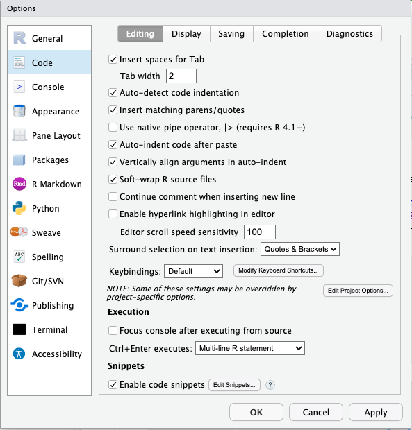
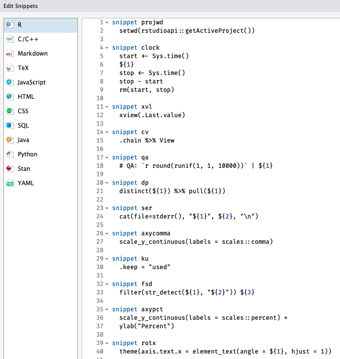

library(ggx)Warning: package 'ggx' was built under R version 4.2.3gghelp("How do I rotate the x-axis")theme(axis.text.x = element_text(angle = 90) gghelp("How do I remove the legend?")theme(legend.position = "none") ggx::gghelp()
Jonathan Zadra
March 27, 2023
Despite having used ggplot for well over a decade, I still find myself forgetting some of the functions and arguments for modifying the formatting. There are just so many. As a result I’m often stuck googling simple things like how to rotate the x axis labels (I have even built some custom snippets for things I do often enough to be worth creating the snippet, but not often enough to remember the exact syntax, more on this at the end).
ggx PackageThe ggx package has a function, gghelp() that accepts natural language queries and returns suggested code for accomplishing your request.
gghelp ExamplesIt works better for some questions than others of course:
Error in dictionary[[best_match_index]][[2]] : subscript out of bounds#Weird suggestion for modifying questions
gghelp("How do I set the opacity of the fill color to 50%?") Warning in gghelp("How do I set the opacity of the fill color to 50%?"): There
seems to be a color missing in your request!theme(plot.title=element_text(color='red')) #Answer is specific to the x-axis tile, but question wasn't clear about what font size so that's understandable
gghelp("How do I change the font size?") theme(axis.title.x=element_text(size=rel(2))) #Good feedback, it wants a value so that the returned code is complete.
gghelp("How do I change the font size of the title?") Warning in gghelp("How do I change the font size of the title?"): There seems
to be a number missing in your request.theme(title=element_text(size=14)) ggx also has a function, gg_() that can be used in the ggplot() chain to accomplish the goal without using the actual code. It essentially uses the code suggested by gghelp() for the same query in the actual ggplot() chain. I DO NOT recommend using this feature, as it is bad practice and may not be replicable down the road. You also do not want future users of your script to have to install ggx. In fact, I would recommend that you not load the library in your script, but rather only use it interactively.
ggplot SnippetsAs I mentioned above, I have a couple snippets I use for common formatting changes, both because I can’t always remember the syntax but also because it’s just faster.
snippet axycomma
scale_y_continuous(labels = scales::comma)
snippet axypct
scale_y_continuous(labels = scales::percent) +
ylab("Percent")
snippet rotx
theme(axis.text.x = element_text(angle = ${1}, hjust = 1))If you haven’t used snippets, they are a way of defining a text shortcut that will tab-autocomplete to the code defined below the shortcut. You can add/edit them in Global Options > Code > Edit Snippets

